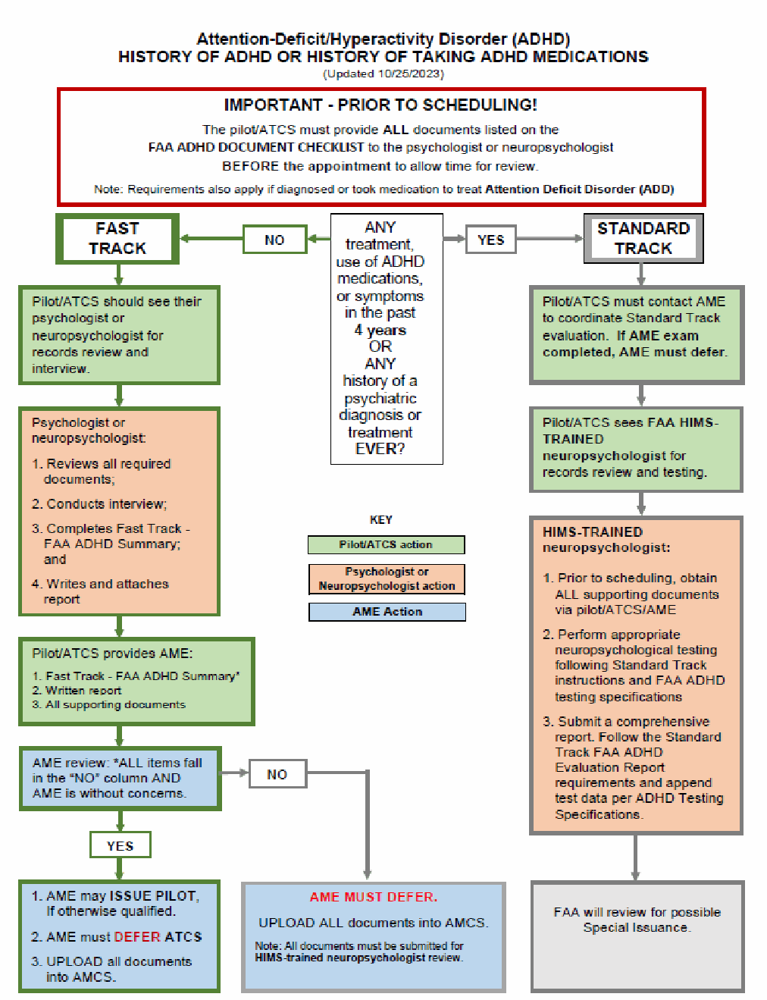

DISEASE PROTOCOLS
(Updated 062/26/2026)
The following lists the Guide for Aviation Medical Examiners Disease Protocols, and course of action that should be taken by the AME as defined by aeromedical decision considerations. (Also see condition specific CACI Certification Worksheets, which can be found in the Dispositions Section.)
- • ANTIDEPRESSANTS
- • ATTENTION-DEFICIT/HYPERACTIVITY DISORDER (ADHD)
- • BINOCULAR MULTIFOCAL AND ACCOMMODATING DEVICES
- • BUNDLE BRANCH BLOCK (BBB)
- • CARDIAC VALVE REPLACEMENT
- CARDIOVASCULAR EVALUATION (CVE)
- • CONDUCTIVE KERATOPLASTY
- • CORONARY HEART DISEASE (CHD)/ CORONARY ARTERY DISEASE RECERTIFICATION STATUS SUMMARY
- • CORONARY HEART DISEASE – 1st and 2nd CLASS
- o CAMI Aerospace Medical Certification Division Limited Certificate Petition
- • CORONARY HEART DISEASE - 3rd CLASS
- • DIABETES MELLITUS - DIET CONTROLLED
- • DIABETES MELLITUS Type II - MEDICATION CONTROLLED (Non Insulin)
- • DIABETES MELLITUS Type I or Type II – INSULIN TREATED - CGM OPTION
- • DIABETES MELLITUS Type I or Type II - INSULIN TREATED - THIRD CLASS OPTION
- • GRADED EXERCISE STRESS TEST REQUIREMENTS (Maximal)
- • HUMAN IMMUNODEFICIENCY VIRUS (HIV)
- • INITIAL EVALUATION OF IMPLANTED PACEMAKER
- • METABOLIC SYNDROME – MEDICATION CONTROLLED
- • MUSCULOSKELETAL EVALUATION
- • NEUROCOGNITIVE IMPAIRMENT
- • NEUROLOGIC EVALUATION
- • OBSTRUCTIVE SLEEP APNEA (OSA) (including Reference materials)
- • PEPTIC ULCER
- • PSYCHIATRIC EVALUATION
- • PSYCHIATRIC AND PSYCHOLOGICAL EVALUATIONS
- • RENAL TRANSPLANT
- • 6-MINUTE WALK TEST (6MWT)
- • SUBSTANCES of DEPENDENCE/ABUSE (Drugs and Alcohol)
- THROMBOEMBOLIC DISEASE
Protocol for Antidepressants
(Updated 04/24/2024)
Antidepressants Protocol Expansion - Effective April 24, 2024:
Additional medications have been added as allowed for special issuance consideration, representing an additional class of antidepressant medications beyond SSRIs. This change, along with the addition of Wellbutrin (a Dopamine/Norepinephrine-Reuptake Inhibitor) on 05/31/2023, has resulted in the FAA’s SSRI Protocol being renamed the Antidepressant Protocol.
PLEASE NOTE: All references to SSRIs, SSRI Protocol, or SSRI program in existing checklists, worksheets, charts, or protocol pages in the AME Guide are considered encompassed in the Antidepressant Protocol and include all conditionally approved medications.
- See table of Antidepressant Medications .
Specifications for Neuropsychological Evaluations for
Attention-Deficit/Hyperactivity Disorder (ADHD)
(Updated 10/30/2024)
Attention-Deficit/Hyperactivity Disorder (ADHD), formerly called Attention Deficit Disorder (ADD), and medications used for treatment may result in cognitive deficits that pose a risk to aviation safety.
For individuals who have a history of ADHD or use of ADHD medications*, there are two possible evaluation paths: Fast Track and Standard Track. For information on the different tracks, any required testing, and specific documentation needed, see the following pages. The information is also linked below.
*Note: The requirements also apply if diagnosed with or took medication to treat Attention Deficit Disorder (ADD)
Disposition Table - Attention-Deficit/Hyperactivity Disorder (ADHD) and/or use of ADHD Medications (Found in ITEM 47. Psychiatric, Psychiatric Conditions)
ADHD Personal Statement Guidelines
FAST TRACK
Fast Track - Information for the Psychologist or Neuropsychologist
Fast Track – FAA ADHD General Information for Pilots and ATCS
Fast Track – FAA ADHD Report Requirements
STANDARD TRACK
Standard Track – FAA ADHD General Information for Pilots and ATCS
Standard Track – FAA ADHD Report Requirements
RESOURCES
FAA Aviation Psychologist and Neuropsychologist List
Reference information for Neuropsychologists and Psychologists

Attention-Deficit/Hyperactivity Disorder (ADHD)
FAA ADHD DOCUMENT CHECKLIST
(Updated 09/25/2024)
Pilot/ATCS: Please provide the following to the doctoral level (PhD or PsyD) psychologist or neuropsychologist so they can review the materials and complete their evaluation and report.
This applies to both FAST TRACK and STANDARD TRACK. Standard Track evaluation must be completed by a FAA HIMS Neuropsychologist.
The evaluation and report must be performed within 90 days of the AME exam:
- 1. Collect the following information and send to the psychologist or neuropsychologist for review BEFORE your appointment:
- a. Pharmacy records within the last four (4) years
- b. Medical records related to the diagnosis and treatment for ADHD
c. Any other evaluations or treatment records related to ADHD or learning issues from any of the following, if applicable:
- Psychiatrist;
- Psychologist;
- Therapist;
- School counselor;
- Education specialist/teacher;
- Speech Therapist; and/or
- Occupational Therapist
- d. Medical records related to any other condition (for a non-ADHD diagnosis) which was treated with ADHD medication(s).
- e. Driver’s license records from all states where a license has been issued within the past four (4) years, as applicable.
- f. Academic records: All transcripts through highest grade or degree, Section 504 Plans, any Individualized Education Programs (IEP), and any records for any history of academic/occupational accommodations.
- g. personal Statement which describes all items on the FAA ADHD Personal Statement Guidelines .
- 2. Remember to make a copy of all the records above as you will also need to bring a copy to your AME to upload into your FAA record.
- 3. In some cases, the psychologist or neuropsychologist may request the entire FAA medical file (e.g., if it contains relevant information you are unable to produce).
To request that a copy of your agency records be sent directly to the psychologist or neuropsychologist, submit Form FAA 8065-2 - REQUEST FOR AIRMAN MEDICAL RECORDS .
Note: The above requirements also apply if diagnosed with or took medication to treat Attention Deficit Disorder (ADD)
Attention-Deficit/Hyperactivity Disorder (ADHD)
ADHD - FAA PERSONAL STATEMENT GUIDELINES
(Updated 08/30/2023)
This applies to both FAST TRACK and STANDARD TRACK. An applicant’s personal/self-statement must be typed, signed, and dated. It should include your name and either a PI# or Date of Birth for identification. Be sure to describe in detail each response (with more than just “yes” or “no” answer).
Write a statement which describes your diagnosis and stimulant medication history to include the following information:
- 1. Why did you seek treatment or an evaluation for ADHD?
- 2. What symptoms and behaviors did you have?
- 3. Why were you prescribed an ADHD medication and or other treatment?
- 4. What medications were prescribed? List all medications prescribed or otherwise used and reason for changes in medications, if any. List approximate dates.
- 5. If you were prescribed or otherwise took ADHD medication, did it help?
If so, under what circumstance and for how long were they effective?
- 6. Did the treatment improve your academic, occupational, or social life? Explain your answer.
7. Did you experience any adverse effects/side effects from the medication?
- a. If yes, describe the effects; and
- b. What did you do to reduce these side effects?
- 8. Who was involved in diagnosing and treating your ADHD?
List all professionals involved (e.g., teacher, school counselor, therapist, psychologist, primary care physician, psychiatrist, or education specialist, if applicable).
- 9. Were you diagnosed with any other condition such as Depression/Anxiety/Obsessive Compulsive Disorder (OCD)/Autism Spectrum Disorder (ASD)/Oppositional Defiant Disorder (ODD)?
- 10. Were diagnosed with a learning disorder (dyslexia/reading difficulties/math difficulties)?
- 11. Which of the following were performed by the person who diagnosed you with ADHD?
Include all that apply:
- a. Interview with a psychologist/psychiatrist/neuropsychologist/Primary Care Physician (PCP) or provider/pediatrician
- b. Interviews with others such as parents, teachers, friends, etc.
- c. Completion of forms/questionnaires (specify completed by self and/or others)
- d. Computer testing
- e. Psychological testing conducted by psychologist or neuropsychologist
- f. Other (specify)
- g. If no testing was performed, that should be stated
- 12. How did the symptoms of ADHD change over time? Are the symptoms gone and if so, as of when?
- 13. Describe coping strategies you learned to deal with ADHD or any other diagnosis.
Are they still used?
- 14. Describe your current ADHD symptoms and behaviors. If you have no symptoms, that should be stated (and the date resolved).
Attention-Deficit/Hyperactivity Disorder (ADHD)
FAST TRACK INFORMATION
See the following pages for:
• FAST TRACK – FAA ADHD Summary
• FAST TRACK – FAA ADHD - Information for the Psychologists or Neuropsychologist
• FAST TRACK – FAA ADHD - Evaluation General Information for Pilots and ATCS
• FAST TRACK – FAA ADHD - Evaluation Report Requirements
Attention-Deficit/Hyperactivity Disorder (ADHD)
FAST TRACK - FAA ADHD SUMMARY
(Updated 10/30/2024)
Name _______________________________ Birthdate ________________
Applicant ID#__________________________ PI# _____________________
PILOT/ATCS: Please take this summary to a doctoral level (PhD or PsyD) psychologist or neuropsychologist with training and experience in the evaluation of ADHD, preferably someone with additional subspecialty training in aviation-specific topics. The psychologist or neuropsychologist should enter the requested information in the space provided below.
When completed, submit the following to your AME for review and upload into DIWS:
- � This completed summary;*
- � The actual clinical report (not patient portal notes) from the doctoral level (PhD or PsyD) psychologist or neuropsychologist; AND
- � All supporting documentation addressing each item (listed on the ADHD DOCUMENT CHECKLIST).
________________________________________________________________________________________________________
IF YOU ARE THE PSYCHOLOGIST OR NEUROPSYCHOLOGIST COMPLETING THIS SUMMARY:
NO YES* |
|---|
- 1. Does the applicant currently display any symptoms of ADHD per DSM?......................
- 2. Has there been instability in academic/occupational or social functioning within the last FOUR years? .............................................................................................................
- 3. Has the individual taken ADHD medication any time (for any reason) within the last FOUR years? ……………………………………………………………................................
- 4. Does the individual have a history of ANY other psychiatric, neurocognitive, or neurodegenerative disorder diagnosis or treatment? (Note: Anxiety, depression or related conditions which meet Fast Track criteria or concussion without sequalae are not included in this category.) ………………………………………………………………...
- 5. Attach a current, detailed clinical report discussing the history, medication(s), diagnosis, and prognosis. Explain any “Yes” answers or concerns. Remember to review the requirements on the FAA ADHD Evaluation Report Requirements.
I attest:
I am a psychologist or neuropsychologist with training and experience in conducting ADHD evaluations. Yes No
I have reviewed all the required items on the ADHD Document Checklist. Yes No
I have additional subspecialty training in aviation-specific topics (aviation medicine [preferred, not required]). Yes No
I have conducted a face-to-face clinical interview in person or by on-screen video (not audio only). Yes No
Evaluator Name : _________________________ Credentials: PhD, PsyD, other ______
_______________________________________ _______________
Evaluator Signature Date of Evaluation
*NOTE: This Attention-Deficit/Hyperactivity Disorder (ADHD) Summary is NOT required, however, it will help to streamline and significantly DECREASE FAA review time.
AME Actions:
- If all items fall into the NO category, the AME may issue a medical certificate, if otherwise qualified. Submit this Summary, the actual clinical visit report, and all supporting documentation reviewed to the FAA.
- If any items fall into the YES* category, the evaluator should explain. The AME must defer. Psychological or neuropsychological evaluation with testing will be required.
- If uploading this document into AMCS use category Beh Hlth - ADHD FAST Track Summary.
Attention-Deficit/Hyperactivity Disorder (ADHD)
FAST TRACK - FAA ADHD EVALUATION
INFORMATION FOR THE PSYCHOLOGIST OR NEUROPSYCHOLOGIST
(Updated 08/30/2023)
FOR PILOTS OR ATCS: Provide this information sheet (prior to your appointment) to the psychologist or neuropsychologist who will be evaluating your history of ADHD and/or use of ADHD medication. The psychologist or neuropsychologist must be a doctoral level (PhD or PsyD) licensed psychologist or neuropsychologist with training and experience in the evaluation of ADHD.
Note: These requirements also apply if you were diagnosed with or took medication to treat Attention Deficit Disorder (ADD)
FOR THE PSYCHOLOGIST OR NEUROPSYCHOLOGIST:
The individual you are evaluating is a pilot or air traffic control specialist (ATCS) with a reported history of ADHD and/or use of ADHD medications*. Your findings will assist in determining this individual’s eligibility for an FAA medical certificate or clearance. Acceptance of this case for evaluation assumes you have the necessary training and experience to conduct an ADHD evaluation.
PLEASE NOTE:
- National Transportation and Safety Board (NTSB) investigations (2000-2015) have concluded that fatal aircraft accidents have been associated with pilots diagnosed with ADHD.
- Pilots and ATCS must adhere to specific aviation medical standards. Your assessment will assist the FAA in identifying and mitigating risks. As you conduct the evaluation, consider the safety of the flying public as well as those on the ground.
- Individuals with a history of ADHD may have a persistent pattern of inattention and/or hyperactivity-impulsivity symptoms which may interfere with aviation safety.
This may present as:
- Compromised focused attention/concentration and/or executive skills;
- Problems with verbal and nonverbal working memory; and
- Issues with planning, mental flexibility, and resistance to distractions.
- Prior to accepting this case, please review the following documents which contain detailed instructions for conducting an ADHD evaluation for FAA medical certification and clearance purposes:
- o ADHD Document Checklist (To be provided by the individual prior to appointment.)
- o Fast Track – FAA ADHD Evaluation Report Requirements
- o Fast Track – FAA ADHD Summary
- Follow-up questions or concerns may be sent to 9-AMC-AAM-NPTesting@faa.gov .
Attention-Deficit/Hyperactivity Disorder (ADHD)
FAST TRACK - FAA ADHD EVALUATION
GENERAL INFORMATION FOR PILOTS AND ATCS
(Updated 10/30/2024)
If you are a PILOT or ATCS with a history of ADHD or taking ADHD Medications*:
1. See your treating physician and get healthy.
2. Do not fly, in accordance with 14 CFR 61.53, until you have an Authorization from the FAA. (If you are an FAA ATCS, you should report this information immediately to your RFS office).
3. Find an Aviation Medical Examiner ( AME ) to work with you through the FAA process.
NOTE: If you have taken medication in the past 4 years, had symptoms
in the past 4 years or have a history of any other psychiatric conditions – STOP.
Go to the Standard Track Evaluation – FAA ADHD Evaluation General Information.
4. To expedite your review time, OBTAIN ALL OF THE FOLLOWING and send to your PROVIDER (psychologist or neuropsychologist) WITH ENOUGH TIME FOR THE PROVIDER TO REVIEW before your appointment:
- � Complete a personal statement. It must be typed, signed, and dated.
The statement should describe your diagnosis and stimulant medication history.
It must include all information on FAA ADHD Personal Statement Guidelines sheet.
- � Collect and verify you have all the documents on the ADHD Document Checklist for review.
- � Find and make an appointment with a doctoral level (PhD or PsyD) licensed psychologist or neuropsychologist with training and experience in the evaluation of ADHD.
- � Provide all materials in the ADHD Document checklist to the psychologist or neuropsychologist prior to your scheduled appointment. Given the extent of documents required to review, check with the evaluating psychologist or neuropsychologist to determine how much lead time they may need to review them prior to your appointment.
- � Confirm the psychologist or neuropsychologist has a blank copy of the Fast Track – FAA ADHD Summary . The psychologist or neuropsychologist should complete both the ADHD Summary AND provide a detailed report, as outlined in the Fast Track – FAA ADHD Evaluation Report Requirements , for use by your AME.
5. What to expect during your evaluation:
The psychologist or neuropsychologist will meet with you for an interview. The personal/self-statement you wrote, along with the records you provided, will also be reviewed and discussed. With your permission, people who know you (e.g., parents, teachers, flight instructor, etc.) may be contacted for additional information.
The psychologist or neuropsychologist should complete the Fast Track – FAA ADHD Summary AND provide a written detailed report which covers all items in the Fast Track – FAA ADHD Evaluation Report Requirements.
Based on the interviews and record review, the psychologist or neuropsychologist may be able to determine if there is sufficient information to make a recommendation to the AME regarding whether medical certification can be issued.
6. When you have accomplished all of the above:
- � Complete a new 8500-8 exam (online using MedXPress);
- � See your AME for the exam portion;
� Bring all the following to your AME visit:
- � Completed FAA ADHD Summary;
- � Actual clinical summary report from the psychologist or neuropsychologist; and
- � Any records reviewed by the psychologist or neuropsychologist.
- � Bring information on any other condition that may require a Special Issuance/AASI/CACI (pilots) or Special Consideration (ATCS).
- � Keep a copy of any reports or testing generated for your files.
7. When submitting information:
• The FAA ADHD Summary may allow the AME to issue a medical certificate for pilots,
- If the AME is not able to issue, they must submit your exam as DEFERRED.
- If you are an ATCS, the AME must DEFER your exam.
- Coordinate with your AME to make sure that all documents are uploaded to the FAA WITHIN 14 DAYS.
- Partial or incomplete packages will NOT be reviewed and will cause a DELAY.
*Note: The above requirements also apply if diagnosed with or took medication to treat Attention Deficit Disorder (ADD)
Attention-Deficit/Hyperactivity Disorder (ADHD)
FAST TRACK - FAA ADHD EVALUATION REPORT REQUIREMENTS
(Updated 09/27/2023)
The evaluation and report must be performed within 90 days of the AME exam and must include the following (at a minimum):
- 1. Document if the interview was completed virtually or in person. Records review and evaluation can be done virtually; however, the evaluation component must be face-to-face on screen, not audio only.
2. List and summarize all documents reviewed. At a minimum this must include all items on the:
- a. FAA ADHD Document Checklist
- b. In the rare case in which a document cannot be obtained, explain in the report the reason it was not available and if this is a concern or not.
- 3. Results of a thorough clinical interview (including collateral interview(s) as needed) that includes detailed history regarding psychosocial and developmental history.
- 4. A mental status examination/behavioral observations.
- 5. An integrated summary of findings.
- 6. An explicit diagnostic statement:
a. Your final clinical diagnosis or findings:
- i. Does the applicant currently display any symptoms of ADHD per DSM?
- ii. Does the applicant meet DSM criteria for diagnosis of ADHD?
Do not simply list if ADHD is present or not. List all diagnoses present or past; specify in remission or residual, as appropriate.
- iii. If there is no DSM diagnosis, are there any concerns regarding neurocognitive impairment or deficiencies? If so, describe their nature and severity;
- b. Has there been instability in academic/occupational or social functioning within the last FOUR years? If yes, describe.
- c. Has the individual taken medication for ADHD any time within the last FOUR years? If yes, describe.
- d. Does the individual have any evidence of a comorbid disorder that could pose a hazard to aviation safety? Or a history of ANY other psychiatric diagnosis or treatment? If none, that should be noted.
- e. Does your diagnosis or findings agree with the diagnosis noted on other supporting or historical documents you reviewed? If it does not, explain your rationale as to your diagnosis or findings.
When you have completed your assessment, the individual will need the following to submit to the FAA:
- � A copy of your full report (not the patient after visit summary);
- � A completed FAA Attention-Deficit/Hyperactivity Disorder (ADHD) Summary; and
- � Copies of all records you reviewed to make your assessment.
Attention-Deficit/Hyperactivity Disorder (ADHD)
STANDARD TRACK
See the following pages for:
• STANDARD TRACK – FAA ADHD - Evaluation General Information for Pilots and ATCS
• STANDARD TRACK – FAA ADHD - Evaluation Report Requirements
Attention-Deficit/Hyperactivity Disorder (ADHD)
STANDARD TRACK - FAA ADHD EVALUATION
GENERAL INFORMATION FOR PILOTS AND ATCS
(Updated 08/28/2024)
Attention-Deficit/Hyperactivity Disorder (ADHD) is a condition that may be aeromedically disqualifying. The evaluation and testing must be performed in-person by a HIMS Neuropsychologist. The responsibility of the HIMS Neuropsychologist is to identify any neurocognitive deficit/impairment that has aeromedical significance.
A. An initial battery of ADHD tests will be required along with potential supplemental tests if:
- ADHD symptoms, treatment, or instability was present in past four (4) years;
- ADHD medication taken in the past four (4) years;
(Note: If ADHD testing is conducted, the individual must have discontinued ADHD medication at least 90 days prior to testing);
- History of any other psychiatric condition(s) or diagnosis (current or historic);
- The AME, psychologist, or neuropsychologist has concerns;
- After initial document review, clear determination cannot be reached by the Fast Track - ADHD FAA Evaluation; and/or
- Requested by the FAA for review.
B. What are the FAA’s testing specifications? Testing specifications required by the FAA are listed on an FAA secure site used by professionals with training regarding the specifications. Authorized professionals should use the secure portal . For access, the HIMS Neuropsychologist should email a request to 9-amc-aam-NPTesting@faa.gov .
C. What are the urinalysis requirements? If ADHD testing is required, the applicant will need to complete a urinalysis for amphetamines and methylphenidate within 24 hours after completing testing. Arrange for a urinalysis order to be sent to a laboratory and be sure it is conducted within 24 hours after testing. Actual laboratory results are required (not clinical summary of results). Testing data cannot be used without the supporting urinalysis and may result in deferral and/or request for re-evaluation.
- Testing data cannot be used without the supporting urinalysis and may result in deferral and/or request for re-evaluation.
- You must order BOTH tests: One for amphetamines AND one for methylphenidate. They are two different tests/different test batteries. If both tests are not ordered separately, additional testing may be required.
D. Who can order a urinalysis? This varies by state law and regulations. Pilots or ATCS should verify if the evaluating HIMS Neuropsychologist has the ability to order the urinalysis. If not, coordinate with your AME or your primary care physician to order the laboratory test. You may also contact a drug testing laboratory near the evaluating HIMS Neuropsychologist’s office to inquire what type of order is required to conduct the drug testing for occupational/licensing purposes. Specify that the test must test for both amphetamines and methylphenidate, which are two different test panels. Prior to the appointment for urinalysis the following checklist is suggested:
- � Identify a drug testing laboratory;
- � Review FAA requirements to conduct two separate tests for amphetamines AND methylphenidate;
- � Check hours of operation;
- � Check if walk-ins are taken for drug testing or if an appointment is required; and
- � Ask if they require lab orders for occupational/licensing drug testing to meet the FAA requirement (physician, psychologist, or none)
E. The HIMS Neuropsychologist must:
- 1. Review any report(s) from the doctoral level licensed psychologist or neuropsychologist created as part of the ADHD Fast Track, if applicable.
- 2. Review all documents listed on the ADHD Document Checklist.
- 3. Perform testing as indicated per the Standard Track testing specifications (on secure site).
- 4. Create a detailed report addressing all the items on the Standard Track - FAA ADHD Evaluation Report Requirements.
Attention-Deficit/Hyperactivity Disorder (ADHD)
STANDARD TRACK - FAA ADHD EVALUATION REPORT REQUIREMENTS
(Updated 09/27/2023)
This evaluation and testing must be performed IN-PERSON by a HIMS Neuropsychologist within 90 days of the AME exam and must include the following (at a minimum):
1. List and summarize all documents reviewed. At a minimum this must include all items on:
- a. ADHD Document Checklist
- b. In the rare case in which a document cannot be obtained, explain in the report the reason it was not available and if this is a concern or not.
2. IF the individual was evaluated as part of the FAST TRACK, verify that you were provided with and reviewed a complete copy of:
a. The FAST TRACK information
- i. Review of the FAST TRACK - FAA ADHD Summary
- ii. Psychologist or neuropsychologist written report used to generate the ADHD summary.
3. Documents from:
- a. FAA ADHD Document Checklist
- b. Any additional documents received and reviewed.
- 4. Results of a thorough clinical interview (including collateral(s) interview(s) as needed) that includes detailed history regarding psychosocial and developmental history.
- 5. A mental status examination/behavioral observations;
- 6. Interpretation of the battery of neuropsychological and psychological tests administered;
- 7. Documentation of urine drug screen results. Document what testing was performed and the results AND attach a copy of the final results. Do not submit the report without integrating drug screen results.
- 8. An integrated summary of findings;
9. An explicit diagnostic statement (consistent with the FAA Regulations
):
a. Your final clinical diagnosis or findings:
- i. Does the applicant currently display any symptoms of ADHD per DSM?
- ii. Does the applicant meet DSM criteria for diagnosis of ADHD?
Do not simply list if ADHD is present or not. List all diagnoses present or past; specify in remission or residual, as appropriate.
- iii. If there is no DSM diagnosis, are there any concerns regarding neurocognitive impairment or deficiencies? If so, describe the nature and severity;
- b. Has there been instability in academic/occupational or social functioning within the last FOUR years? If yes, describe.
- c. Has the individual taken medication for ADHD anytime within the last FOUR years? If yes, describe.
- d. Does the individual have any evidence of a comorbid disorder that could pose a hazard to aviation safety? Or a history of ANY other psychiatric diagnosis or treatment? If none, then that should be noted; e. Does your diagnosis or findings agree with the diagnosis noted on other supporting or historical documents you reviewed? If it does not, then you should explain your rationale as to your diagnosis or findings.
- 10. Final recommendation/determination. Results of the comprehensive evaluation and testing
(INITIAL BATTERY PLUS SUPPLEMENTAL BATTER when required [found on secure portal ]) must conclude if you identified:
- a. NO CONCERNS OR ABNORMALITIES:
The individual is exhibiting functioning that is completely within normal limits and lacking any suspicion of neurocognitive deficit. The final report should also document abnormalities found in the INITIAL BATTERY and what additional testing dismissed the abnormalities as a diagnostic concern.
- b. CONCERNS OR ABNORMALITIES FOUND:
If the individual’s results raise concerns or show neuropsychological impairment, then include the following in the report:
- Describe the nature and severity of any noted neurocognitive deficit(s);
- Describe the potential impact to flight performance/flight safety of the noted deficit(s); and
- Describe any applicable diagnosis, as well as any applicable comorbid condition(s)
WHEN YOU HAVE COMPLETED YOUR ASSESSMENT: Submit to the AME of record (for direct upload into AMCS) or as specified in the FAA letter:
- � Copy of your full report (not the patient portal notes) containing a MINIMUM of all the above elements;
- � Copies of all records you reviewed to make your assessment. (Exclude copies of any Fast Track document if already submitted to FAA and any records previously received by you from the FAA.);
- � Copies of all computer score reports; and
- � An appended score summary sheet that includes raw scores, percentile scores, and/or standard scores for all tests administered.
When available, pilot norms must be used. If pilot norms are not available for a particular test or inappropriate for a specific applicant, then the normative data/comparison group relied upon for interpretation (e.g., general population, age/education-corrected) must be specified.
Attention-Deficit/Hyperactivity Disorder (ADHD)
REFERENCE INFORMATION FOR THE PSYCHOLOGIST OR NEUROPSYCHOLOGIST
(Updated 08/30/2023)
The responsibility of the psychologist or neuropsychologist is to identify any neurocognitive deficit/impairment that has aeromedical significance. Attention-Deficit/Hyperactivity Disorder (ADHD), formerly called Attention Deficit Disorder (ADD), is a condition that may be aeromedically disqualifying. For reference information and comments on specific tests, authorized professionals should use the portal at FAA Neuropsychology Testing Specifications . For access to the portal, psychologists and neuropsychologists should email a request to 9-amc-aam-NPTesting@faa.gov .
Source: FAA Guide for Aviation Medical Examiners, PDF pages 504–521. Always check the official FAA version.